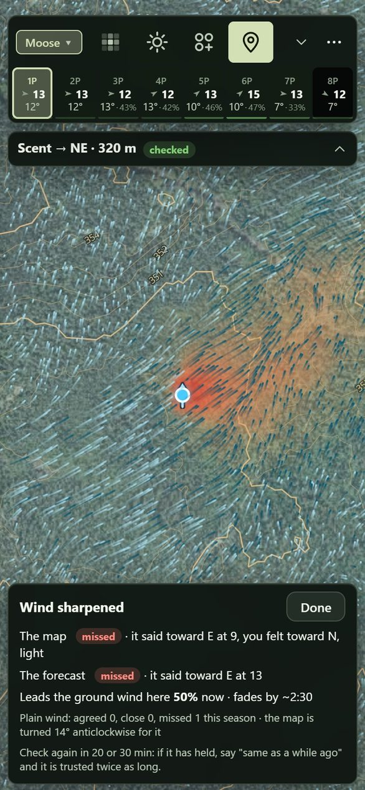

Calls you hear
Tap Heard and tap where the call came from. The map draws where the bull is likely to swing to get your wind.
Made to order for your ground · on the stand and on the move
Groundwind runs a real wind model at ground level: Environment Canada's high-resolution forecast, worked over the LiDAR terrain and through the trees and the season's leaves. Puff your powder and tap where it went, and your check corrects the model around you. Your scent cone shows where your scent is really going, with or without bars.
It's made for your phone. Point the camera here to open it there, then add it to your home screen.
Forecasts are made for open ground. Under the canopy the air slows down, trees and slots turn it, and at dawn and dusk it can run against the forecast altogether. You already carry powder for this. Groundwind makes every puff count.
And it goes where you go. Most hunting apps are built around a stand on a property line. Groundwind works just as hard on the move: angling in on a bull, working round a bluff, still-hunting an edge.
The wind model
The forecast's 2.5 km grid can't see a ridge, a bog, a spruce stand or the lee of a lake. Groundwind works it down to the air at head height on a 30 m grid, for any minute of the week, on the phone. Each layer changes where your scent goes.
30 m grid · head height · any minute · offline
Made to order
An app that runs anywhere can only give you the forecast arrow. The wind at your head depends on your ridge, your stands and your shoreline, and getting it right takes 1 m LiDAR, the forest inventory and a wind model solved over that exact ground. So we don't fake it everywhere. You send us your spot, and we build it.
Forecast
Environment Canada's 2.5 km HRDPS model for the next two days, with a seven-day outlook behind it, saved on your phone at camp. Walk out of service and it's still there, with its age shown, as your best guess until a check sharpens it.
HRDPS 2.5 km · a new run 4× a day · 7-day outlook
Groundwind asks for each new HRDPS run by name as it lands and drops it into the seven-day blend. The wind is fetched over a grid across your area, so the lee of a lake still shows. A ground model then brings the 10 m wind down to head height: the canopy, the slots between stands, morning and evening thermals, and the still layer that settles on a clear night.
Wind checks
Puff your powder and tap the way it went. Your check goes into the wind model: the ground wind around you is pulled toward what you felt, and your scent cone moves with it. It also teaches the model how that kind of air behaves where you hunt, so the next sit starts closer.
Scored in your hunt log: forecast vs map, check by check
A check pulls the ground wind inside its ring toward what you felt and fades with time, more slowly if you say the wind has held. It also becomes a lesson for its kind of air, like cold air draining, a lake breeze or a slot in the trees: a turn and a speed correction the model applies wherever that air turns up, forgotten over about two weeks. Each check saves what the forecast and the model said beside what you felt, so the hunt log shows how often each was right.

Habitat and weather
Habitat, weather and the season all move animals. Groundwind scores moose, deer, grouse and bear across your area, hour by hour for the week ahead, weighing the last ten days of weather, the wind, the rut and the leaves, and what you've logged yourself. Tap a spot for its score, Dig in for the reasons, and turn the knobs if you know better.
The rules come from Ontario's habitat guides and published field studies, scored on a 30 m grid. Weather moves them hour by hour: temperature (below), wind and heavy rain cutting calling range, a 5 °C drop with the wind easing, and overcast cool days that stretch the morning. The rut follows the calendar, peaking from 25 September to 5 October. Your sightings pull the map toward them for about a week, and blank sits push it down. Every score shows its arithmetic, and every rule is a knob from off to double.
Behaviour
Groundwind reads the last ten days of highs beside the forecast, because moose feel heat early. Every hour's score carries the temperature, and the scoring tells you in so many words when the game is lying up and when the break is coming.
| Temperature | Moose activity |
|---|---|
| 10 °C or under | Full |
| 10 to 14 °C | 80% |
| 14 to 20 °C | Half |
| Over 20 °C | About a third |
An example week, in the app's words
warm spell, day 3: bedded through the heat, moving at night
first cool day after 3 warm ones: expect movement
Bush and range
Bush thickness at eye level, from the LiDAR point cloud: open, light, thick or thicket. It decides how far you'll see, how loud the walk is, and where a moose can stand unseen.
Eye-level cover isn't the canopy. A closed canopy shades the brush out, while a cut or a burn fills in with suckers and saplings. Groundwind counts the LiDAR returns between 0.5 and 3 m against everything below 3 m, cell by 10 m cell. Where the point cloud hasn't been fetched yet, it estimates the brush from each stand's age and makeup.
Party scent
Set the time to the evening hunt and drop two sitters. Both cones show on the evening wind, numbered, with whose scent drifts over whom. Move them until neither of you is on the way he'll come in.
Cones at 1.5 m · or from a 4 or 6 m stand · added up
The cones run on the forecast for that hour, brought down to head height, including the cold air that starts draining toward dusk. The scent card adds them up, with lines like "2 sitters · scent over 5.2 ha" and "1's scent drifts over you". The old rule still holds: put the caller 40 to 50 m upwind of the shooter, so a bull circling downwind of the calls walks into the shooter.
On the move
A lot of moose hunting is moving: angling in on a bull you've heard, still-hunting an edge, working round a bluff. That's where a forecast is least use. Before you step round the corner, see what the air is doing there and how far you'll see.
The ground wind is solved over the terrain, then slowed and turned by the bush: tree lines, slots between stands, the lee of a ridge. Eye-level cover isn't the canopy, so Groundwind reads the brush from each stand's age and makeup and from the LiDAR's height and density, which is what sets the sight lines.
Tap Heard and tap where the call came from. The map draws where the bull is likely to swing to get your wind.
Three ways in on foot over the LiDAR: the easiest walk, and hunt routes that skirt the best ground and keep your scent off it.
Your track, the calls you heard and your wind checks, grouped into outings. It all works offline once the area is saved.
Open the beta and both are there to try: it's what your own spot will look like.
Open the betaOn an iPhone, open the link in Safari, tap Share, then Add to Home Screen. On Android, open it in Chrome and choose Install app. Before you lose signal, save the area in Settings, under Maps on this phone.
Nothing during the beta.
Both. Groundwind runs in your phone's browser and goes on the home screen like any app: on an iPhone, Safari's Share, then Add to Home Screen; on Android, Chrome's Install app. No app store and no account.
Yes, once your area is saved on the phone (Settings, then Maps on this phone). The forecast you saved at camp keeps working with its age shown, and your track, calls and wind checks are kept as you go.
Where we've built it, on purpose. Each area is a 10 × 10 km block built around someone's spot: Pickle Lake near White River and Lac Bailey in Québec so far. Request yours and it's ready within 48 hours.
Because a map of everywhere can only show you the forecast arrow. The wind at your head depends on your ridge, your stands and your shoreline, and modelling that takes 1 m LiDAR, the forest inventory and a wind solve over that exact ground. We'd rather do your spot properly than the whole country badly.
Your track, pins, hunt log and wind checks stay on your phone. Nothing comes to us unless you send it: a spot you share, or a log you upload when something's wrong. The forecast is fetched from Open-Meteo for your area.
It's a model, and every model is wrong somewhere. That's why the checks exist: a puff of powder at your spot beats any forecast, and the hunt log keeps score of how often the forecast and the model matched what you felt.